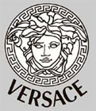
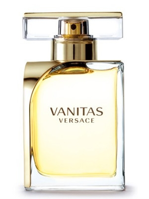
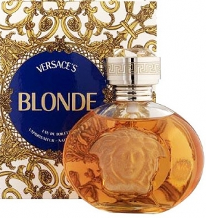

范思哲/Versace
来自意大利知名的奢侈品牌范思哲（Versace）创造了一个时尚帝国，代表着一个品牌家族，范思哲的时尚产品渗透了生活的每个领域，其鲜明的设计风格，独特的美感，极强的先锋艺术表征让它风靡全球。它的设计风格鲜明，是独特的美感极强的先锋艺术的象征。其中最魅力独具的是那些展示充满文艺复兴时期特色的华丽的具有丰富想象力的女装款式，它们性感漂亮，女性味十足，色彩鲜艳，既有歌剧式的超平现实的华丽，又能充分考虑穿着舒适性及恰当地显示体型。范思哲还经营香水、眼镜、领带、皮件、包袋、瓷器、玻璃器皿、丝巾、羽绒制品、家具产品等。
创立于1978年，品牌标志是神话中的蛇妖美杜莎（Medusa），代表着致命的吸引力。范思哲的设计风格非常鲜明，独特的美感、极强的先锋艺术表征让他风靡全球，他强调快乐与性感，领口常开到腰部以下，拮取了古典贵族风格的豪华、奢丽，又能充分考虑穿着舒适及恰当的显示体型。范思哲善于采用高贵豪华的面料，借助斜裁方式，在生硬的几何线条与柔和的身体曲线间巧妙过渡，范思哲的套装、裙子、大衣等都以线条为标志，性感地表达女性的身体。范思哲品牌主要服务对象是皇室贵族和明星，其中女晚装是范思哲的精髓和灵魂。
范思哲logo设计运用象征的手法，采用神话中蛇妖美杜莎的造型作为精神象征所在，汲取古希腊、埃及、印度等的瑰丽文化打造而成。美杜莎代表着致命的吸引力，它象征着范思哲不仅有着超脱歌剧式的华丽，极强的先锋潮流艺术特征受到世人的追捧。范思哲品牌创造了意大利 时尚的帝国，它渗透到人们心中的每个角落，参悟透人心所念。华丽的设计更是对于生活的热爱，憧憬着未来的无限美好与喜悦，将人性中最性感的部分展露无遗。创始人：Gianni Versace 詹尼•范思哲（1997 年逝世）

bright crystal absolu_versace
- 类型：女士香水
- 前调：柚子、石榴籽、覆盆子醇
- 中调：牡丹、木兰花、莲花
- 后调：植物琥珀、桃花木、麝香
- 浓度:Eau de parfume
- 发行年：2013

gianni versace couture_versace
- 类型：女士香水
- 前调：佛手柑、柑橘、草莓、橘子
- 中调：茉莉、天芥菜
- 后调：薰草豆、广藿香、檀香
- 浓度:
- 发行年：2008

red jeans_versace
- 类型：女士香水
- 前调：桃、杏、小苍兰、黑醋栗
- 中调：山谷百合、水仙、水百合、玫瑰
- 后调：檀香、麝香和香子兰
- 浓度:Eau de toilette
- 发行年：1994

crystal noir_versace
- 类型：女士香水
- 前调：
- 中调：栀子花
- 后调：琥珀、麝香
- 浓度:Eau de toilette
- 发行年：2004

vanitas_versace
- 类型：女士香水
- 前调：酸橙
- 中调：栀子花、小苍兰
- 后调：雪松
- 浓度:EDT/EDP
- 发行年：2011

yellow diamond perfume_versace
- 类型：女士香水
- 前调：
- 中调：
- 后调：
- 浓度:Eau de toilette
- 发行年：2011

versace pour homme_versace
- 类型：男士香水
- 前调：
- 中调：鼠尾草、蓝风信子、雪松木、沉香
- 后调：琥珀、麝香
- 浓度:
- 发行年：2008

eros_versace
- 类型：男士香水
- 前调：薄荷叶、柠檬、青苹果
- 中调：黑香豆、香草
- 后调：雪松、香根草、橡树苔藓
- 浓度:
- 发行年：2012

eau fraiche_versace
- 类型：男士香水
- 前调：杨桃、白柠檬、花梨木
- 中调：雪松叶、龙蒿、鼠尾草
- 后调：梧桐木、琥珀、麝香
- 浓度:Eau Fraiche
- 发行年：

baby blue jeans_versace
- 类型：男士香水
- 前调：酸橙、柑橘、佛手柑
- 中调：迷迭香、鸢尾花、枫子香
- 后调：檀香、广藿香、麝香、香子兰、雪松
- 浓度:Eau de toilette
- 发行年：1995

versus time for action_versace
- 类型：中性香水
- 前调：柑橘、香柠檬油、枫子香、刺柏木、天竺葵
- 中调：玫瑰、肉豆蔻、茉莉、紫罗兰
- 后调：雪松、鸢尾草、檀香木、香子兰
- 浓度:
- 发行年：2003

blonde_versace
- 类型：中性香水
- 前调：栀子花、海桐花、佛手柑
- 中调：晚香玉、水仙花、依兰树
- 后调：安息香、麝香、麝猫香、檀香
- 浓度:Pure Perfume
- 发行年：1995